유통관리사-1급 (2019-06-30 기출문제)
1과목: 유통경영
1. 부채를 만기일에 따라 유동부채와 비유동부채로 분류할 경우, 유동부채로만 바르게 짝지어 진 것은?
- 매입채무 - 단기차입금 -사채
- 미지급비용 –선수금 –매입채무
- 선수금 - 사채 - 장기차입금
- 유동성장기부채- 미지급비용 - 장기미지급금
- 장기차입금 –매입채무 - 유동성장기부채
(정답률: 알수없음)

2. K사는 1월 1일 기준으로 상품 3개(단가 \100)를 기초 재고자산으로 보유하고 있었다. 5월 5일 상품 2개 (단가 R150)를, 7월 7일 상품 2개 (단가 \100)를 각각 구입하였다. 당해 연도에 4개의 상품을 단가 A200에 판매하였다. 선입선출법을 사용할 경우 K사의 매출원가는?
- 300
- 350
- 400
- 450
- 800
(정답률: 55%)
3. 회계정보 이용자들에게 유용한 정보를 제공하는 재무제표의 기본 가정 혹은 원칙으로 옳지 않은 것은?
- 재무건전성 (financial health)
- 기업실체의 가정(economic entity)
- 완전공시의 원칙(full disclosure)
- 계속기업의 가정(going concern)
- 발생주의(accrual basis)
(정답률: 알수없음)
4. 비율분석에 사용되는 대표적인 재무비율들에 대한 설명 중 옳지 않은 것은?
- 자산을 효율적으로 사용하는지를 평가하는 비율은 영업활동비율이다.
- 이윤 발생을 위한 자산의 효율성을 측정할 수 있는 투자수익률은 수익성비율이다.
- 조직이 유동부채를 감당할 수 있는 능력인 유동성 비율에는 이자보상률이 포함된다.
- 부채비율이 높을수록 조직의 레버리지 수준이 높다고 볼 수 있다.
- 매출액을 재고자산으로 나누면 재고자산회전율을 구할 수 있다.
(정답률: 알수없음)
5. “최저임금법” (법률 제15666호, 2018. 6. 12., 일부개정)에 대한 설명 중 옳지 않은 것은?
- 동거하는 친족만을 사용하는 사업과 가사(家事) 사용인에게는 적용하지 않는다.
- 최저임금은 근로자의 생계비, 유사 근로자의 임금, 노동생산성 및 소득분배율 등을 고려하여 정한다.
- 최저임금액은 시간ㆍ일(日)ㆍ주(週) 또는 월(月)을 단위로 하여 정한다.
- 선원과 선원을 사용하는 선박의 소유자에게는 적용하지 않는다.
- 최저임금위원회는 매년 8월 5일까지 최저임금을 결정 하여야 한다.
(정답률: 알수없음)
6. 의사결정을 개인차원 의사결정, 집단차원 의사결정, 조직차원 의사결정으로 나눌 때 집단차원 의사결정과 관련 되는 것은?
- 창의력
- 전략적 의사결정
- 휴리스틱스
- 스키마(schema)
- 애쉬효과(Asch effect)
(정답률: 알수없음)
7. “소비자기본법”(법률 제15696호, 2018. 6. 12., 일부 개정)에 의하면 국가는 소비자가 사업자와의 거래에 있어서 표시나 포장 등으로 인하여 물품 등을 잘못 선택하거나 사용하지 아니하도록 표시기준을 정하여야 한다고 명시되어 있다. 이러한 표시기준으로 옳지 않은 것은?
- 사용방법, 사용ㆍ보관할 때의 주의사항 및 경고사항
- 표시의 크기ㆍ위치 및 방법
- 물품 등에 따른 불만이나 소비자피해가 있는 경우의 처리기구 및 처리방법
- 시각장애인을 위한 표시방법
- 물품 등을 제조한 생산자의 성명
(정답률: 알수없음)
8. 조직의 지도원리 중 하나인 효과성(effectiveness)에 대한 설명으로 옳지 않은 것은?
- 결정된 목표를 달성하는 정도를 말한다.
- 적절한 목표를 설정하는 능력을 포함한다.
- 결국 어떻게 일을 할 것인가 보다는 어떤 일을 할것이냐를 중요시하는 개념이다
- 일을 제대로 하는 것(doing things right)과 관련이 있다.
- 조직구성원의 성취노력에 대해 제공되는 반대급부에 대해 구성원이 느끼는 만족의 정도도 포함된다.
(정답률: 알수없음)
9. ‘리더상(像)을 인간중심형과 과업중심형으로 나누고, 이를 알아내기 위해 설문을 이용하여 LPC(least preferred co-worker)점수를 측정하여 가장 같이 일하고 싶지 않은 동료에게 주는 점수가 높으면 인간관계지향형, 낮으면 과업지향형으로 분류하였다’ 리더십이론에 관한 위의 내용과 관련이 있는 사람은?
- 프레드 피들러(Fred Fiedler)
- 로버트 브레이크와 제인 무튼(Robert Blake & Jane Mouton)
- 캐더린 아담스(Katherine Adams)
- 스콧 만(Scott Mann )
- 마트 맥그리거 (Mart McGregor)
(정답률: 알수없음)
10. 아래 글상자에서 설명하는 조직과 관련된 용어로서 가장 옳은 것은?
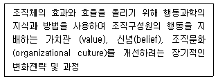
- 조직 행동
- 조직 개발
- 조직 설계
- 조직 진단
- 조직 구조
(정답률: 알수없음)
11. “유통산업발전법” (법률 제14997호, 2017. 10. 31., 일부개정)에서 정의하는 체인사업으로 옳지 않은 것은?
- 임의가맹점형 체인사업
- 조합형 체인사업
- 전문점형 체인사업
- 직영점형 체인사업
- 프랜차이즈형 체인사업
(정답률: 알수없음)
12. 조직차원의 커뮤니케이션을 공식적커뮤니케이션, 비공식적 커뮤니케이션으로 나눌 때, 비공식적 커뮤니케이션과 가장 관련이 깊은 것은?
- 상향적, 하향적, 수직적, 대각적 커뮤니케이션
- 그레잎바인(grapevine)
- 수평적 커뮤니케이션
- 톱다운(Top-Down) 방식
- 제안제도
(정답률: 알수없음)
13. 아래 글상자의 내용은 동기이론 중 어느 것에 관련된 이론인가?
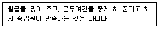
- 매슬로우(Abraham Maslow)의 욕구단계이론
- 알더퍼(Clayton Alderfer)의 ERG이론
- 브룸(Victor Vroom)의 기대이론
- 아담스(Katherine Adams)의 공정성이론
- 허츠버그(Frederick Herzberg)의 2요인이론
(정답률: 알수없음)
14. 조직행동이론에서 말하는 태도(attitude)에 대한 설명으로 옳지 않은 것은?
- 어떤 사물이나 사람에 대한 육체적인 자세
- 어떤 환경(사물, 사람, 사건)으로부터의 자극에 대하여 반응하려는 상태
- 어떤 지각을 바탕으로 형성된 호,불호의 상태
- 어떤 사람이나 사물에 대한 좋다 혹은 싫다 의 반응
- 어떤 행동이 일어나기 전의 전초적인 마음 상태
(정답률: 알수없음)
15. 학습이론과 관련된 아래의 내용 중 옳지 않은 것은?
- 학습은 직·간접적인 경험을 통하여 발생한다.
- 행위수정이론(behavioral modification perspective)은 학습이론과 관련이 없다.
- 학습에 의한 행동변화는 상당기간 지속되어야 한다.
- 학습이론은 행위주의학파와 인지론학파간의 치열한 논쟁 속에서 발전해 왔다.
- 학습이론은 고전적 조건화 이론, 즉 자극-반응주의 이론으로부터 시작되었다.
(정답률: 알수없음)
16. 소매업체의 성과척도 중 점포 운영척도와 관련된 설명으로 가장 옳지 않은 것은?
- 매장관리자가 통제하는 결정적인 자원은 상품재고이다.
- 점포운영 생산성 척도에는 직원당 매출액이 포함된다.
- 감모손실, 에너지 비용을 통제하는 것도 포함한다.
- 무인판매대를 통해 노동생산성을 향상시키기도 한다.
- 매장 공간 활용과 직원관리를 통해 생산성을 향상시키려 노력한다.
(정답률: 알수없음)
17. 제도화 조직이론에 관한 설명으로 옳은 것을 모두 고르면?
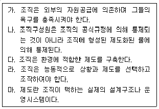
- 가, 나
- 나, 다
- 다, 라
- 가, 다, 마
- 나, 마
(정답률: 알수없음)
18. 비용-조업도-이익분석(Cost Volume Profit Analysis)에서 고정비로 처리하는 비용요소들로만 짝지어진 것은?
- 지급이자 - 연구개발비 - 외주가공비 - 접대비
- 임차료 - 고정급 급여 - 운반비 - 종업원 훈련비
- 시장개발비 - 포장비 - 복리후생비 - 운반비
- 감가상각비 - 보험료 - 수선 유지비 - 종업원 훈련비
- 임차료 - 포장비 - 고정급 급여 - 판매수수료
(정답률: 알수없음)
19. 조직몰입(organizational commitment)에 대한 내용으로 옳은 것은?
- 심리적 부담이나 의무감 때문에 조직에 몰입하는 것을 지속적 몰입이라 한다.
- 정서적 몰입은 소속된 조직과 결별하는 데 따르는 비용이 많이 들기 때문에 구성원으로서의 자격을 유지하려는 심리적 상태를 말한다.
- 정서적 몰입, 지속적 몰입, 규범적 몰입 등으로 구성된다.
- 몰입의 대상이 되는 조직은 일반적으로 하나의 조직이 대상이 된다.
- 몰입의 대상은 기업이나 직장, 조직에 해당되고 직업 자체에 대한 몰입은 없다.
(정답률: 알수없음)
20. 인사평가에 관한 설명으로 가장 부적절한 것은?
- 후광효과는 평가자가 피평가자의 어느 한 면을 기준으로 다른 것까지 함께 평가해 버리는 경향을 말한다.
- 평가의 타당성이란 동일한 피평가자를 반복하여 평가하여도 비슷한 결과가 나타나는지를 의미한다.
- 상동적 오류란 특정한 사람에 대해 갖고 있는 평가자의 지각에 의해 나타난다.
- 신뢰성 관련 오류 중 정보부족으로 인해 중심화경향, 귀속과정오류, 2차 고과자 오류가 발생한다.
- 수용성이란 인사평가제도를 피평가자들이 적법하고 필요한 것이라 믿고, 평가가 공정하게 이루어지며 그리고 평가결과가 활용되는 평가목적에 대해 동의 하는 정도이다.
(정답률: 알수없음)
2과목: 물류경영
21. 팔레트 풀(pallet pool) 활성화 방안 설명으로 옳지 않은 것은?
- 팔레트 표준화가 필수적이다.
- 공팔레트 회수전문업자를 두는 것이 필요하다.
- 표준팔레트를 다량 보유한 대여업체가 있어야 한다.
- 지역 및 전국적 팔레트 집배망의 구축은 필요치 않다.
- 팔레트 데포 및 네트워크 운영을 위한 정보시스템이 필요하다.
(정답률: 알수없음)
22. 물류비 단계별 관리 순서가 옳게 나열된 것은?
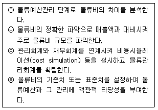
- ㉠ - ㉡ - ㉢ - ㉣
- ㉠ - ㉢ - ㉣ - ㉡
- ㉡ - ㉠ - ㉣ - ㉢
- ㉡ - ㉣ - ㉢ - ㉠
- ㉢ - ㉣ - ㉡ - ㉠
(정답률: 알수없음)
23. 물류표준화의 저해요인으로 옳지 않은 것은?
- 표준화에 대한 인식 부족
- 유닛로드시스템(unit load system) 통칙에 대한 낮은 인지도
- 표준팔레트와 정합되는 KS 외부포장규격이 단순하여 보급 확대
- 유닛로드시스템(unit load system) 규격의 표준팔레트, 보관랙(rack) 등 물류기기 및 설비의 사용 미흡
- 표준EDI, 표준물류바코드 등 정보화 기반요소의 활용 부족
(정답률: 알수없음)
24. 아래 글상자 내용 중 수배송물류의 기능을 모두 고른 것으로 옳은 것은?
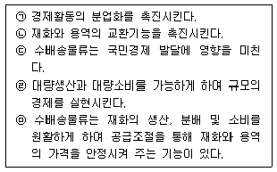
- ㉠
- ㉠, ㉡
- ㉠, ㉡, ㉢
- ㉠, ㉡, ㉢, ㉣
- ㉠, ㉡, ㉢, ㉣, ㉤
(정답률: 알수없음)
25. 물류비에 의한 물류관리 요건에 대한 설명으로 옳지 않은 것은?
- 원인 규명이 용이할 것
- 이용 목적이 명확할 것
- 시계열 데이터로서 계속성이 있을 것
- 물류비용의 내용이 복잡하고 처리가 어려울 것
- 데이터의 수집이 쉽고, 이 데이터를 일상화(routine)할 수 있을 것
(정답률: 알수없음)
26. 복합운송에 관계된 내용으로 옳은 것은?
- 복합운송인이 운송 전체 구간에 걸쳐 화주에게 구간마다 분리된 책임을 진다.
- 운송구간마다 전 구간 단일화된 운임이 아닌 분할된 운임을 사용한다.
- 복합운송인이 화주에 대하여 상이한 운송구간마다 다른 개별적인 복합운송증권을 발행한다.
- NVOCC(non vessel operating common carrier)는 자기가 직접 선박을 운항하는 운송인이다.
- 해운선사, 항공회사가 복합운송인이 될 수 있는 것처럼 포워더형 운송인도 복합운송인이 될 수 있다.
(정답률: 알수없음)
27. 컨테이너 운송방식에 대한 내용으로 옳은 것은?
- 컨테이너 규격화와 취급 기계화로 인해 항만에서 발생하는 화물취급비용이 크게 증가하였다.
- 컨테이너는 화주 측에서 보유하는 용기이므로 화주측에서 컨테이너 재고관리가 필요하다.
- 컨테이너 운송도중 운송수단이 바뀔 때는 내품의 재적입을 통해 다른 운송수단에 환적시켜야 한다.
- 화주의 화물을 문전에서 문전까지 운송할 수 있다.
- 컨테이너 구매에 필요한 초기 이용자본이 매우 적다.
(정답률: 알수없음)
28. 아래 글상자 내용 중 사업부제 물류조직의 특징을 모두 고른 것으로 옳은 것은?
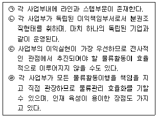
- ㉠
- ㉠, ㉡
- ㉡, ㉢
- ㉡, ㉢, ㉣
- ㉠, ㉡, ㉢, ㉣
(정답률: 알수없음)
29. 물류정보시스템의 긍정적 효과로 옳지 않은 것은?
- 재고의 적정화
- 제품 품질의 향상
- 리드타임의 감소
- 출하작업의 효율화
- 출하의 정확도 향상
(정답률: 알수없음)
30. 아래 글상자에서 말하는 하역합리화의 ‘이 원칙’은 어떤 것인가?
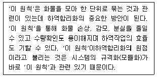
- 인터페이스
- 시스템화
- 기계화
- 단위화
- 활성화
(정답률: 알수없음)
31. 아래 글 상자의 내용은 어떤 시스템을 설명하고 있는가?
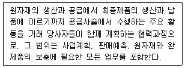
- CPFR(collaborative planning forecasting replenishment)
- ECR(efficient consumer response)
- CRP(continuous replenishment planning)
- CMI(co-managed inventory)
- QR(quick response)
(정답률: 알수없음)
32. 상업포장과 공업포장의 비교 설명으로 옳지 않은 것은?
- 상업포장은 구매자 또는 소비자와 직접 접촉한다는 것을 염두 해 두어야 한다.
- 공업포장은 상품보호가 가장 중요하고 항상 상품보호를 최우선으로 한다.
- 상업포장은 판촉이 중요하며, 공업포장도 판촉을 고려 하지만 절대적인 것은 아니다.
- 상업포장은 상류활동이고 공업포장은 물류활동이다. 이에 상업포장은 판촉수단의 하나이고 공업포장은 물류수단의 하나이다.
- 매출신장을 위해 상업포장은 비용 상승은 고려치 않으며, 상품보호를 전제로 공업포장은 항상 최고비용을 추구한다.
(정답률: 알수없음)
33. 물류 고객서비스에 대한 내용으로 옳지 않은 것은?
- 물류 고객서비스는 제품을 고객이 만족하는 형태로 배달하고 대금을 청구하며, 그 결과 자사의 목표를 진전시키는 사업상의 모든 영역을 포함하는 제반활동 체계이다.
- 물류 고객서비스 성과는 외부 고객에 중점을 두면서 물류시스템이 서비스 효용을 창출하는 데 얼마나 효과적으로 작동하는지 측정한다.
- 물류 고객서비스의 차별화는 경쟁우위를 제공할 수 있다.
- 물류 고객서비스 수준은 기업의 물류원가에 영향을 미치므로 이익에 중요한 역할을 한다.
- 물류 고객서비스는 물류시스템의 투입물로서 기업 마케팅 믹스 중 가격과 관련이 있다.
(정답률: 알수없음)
34. 아래 글상자는 정기주문법과 정량주문법의 비교 설명이다. 옳지 않은 것은?
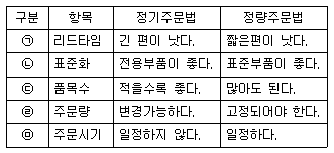
- ㉠
- ㉡
- ㉢
- ㉣
- ㉤
(정답률: 알수없음)
35. 보기들은 공통적으로 어떤 하나에 대해 기술하고 있다. 그 내용이 어색한 것은?
- 수신기관 문서양식에 맞추어 데이터를 재입력해야 한다.
- 전자서류를 이용하여 업무를 처리할 수 있게 한다.
- VAN(value added network)을 이용하는 내용물로 설명될 수 있다.
- 전자문서교환으로 해석될 수 있다.
- 제3자를 매개로 하여 기업 간의 자료를 교환하는 통신망이다.
(정답률: 알수없음)
36. QR(quick Response) 시스템에 대한 내용으로 옳은 것은?
- 다양한 소비자 니즈를 충족하기 위해 긴 제품개발 기간을 갖는다.
- 안정적인 매출 극대화를 위하여 장기간에 걸친 수요예측 결과를 생산에 반영한다.
- 제조업자에게는 유연한 생산시스템이 실현될 수 있으나 소매업자에게는 상품회전율이 하락될 수 있다는 한계점이 존재한다.
- 제조사는 소비자의 소비패턴 변화를 반영하여 다양한 상품을 제공할 수 있다.
- 실시간 수요를 충족시키기 위해 재고보유가 많아지므로 재고의 양과 재고의 반품이 증가될 수 있다.
(정답률: 알수없음)
37. 물류정보시스템의 하위 업무 지원 시스템과 활용되는 데이터를 잘못 연결한 것은?
- 발주점 결정을 위한 시뮬레이션 시스템: 재고 ABC 분석 데이터, 판매 및 미판매실적
- 창고 내의 위치 결정이나 변경을 위한 위치관리 시스템:피킹 빈도나 수량을 토대로 하는 피킹 실적
- 배차계획지원시스템: 차량수배, 적재계획
- 배차루트지원시스템: 고객발주에서 창고입하까지 리드타임, 수요예측
- 최적작업계획을 시뮬레이션하는 LSP(labor scheduling program): 창고내 생산성, 작업 단계별 현행 작업 실태
(정답률: 알수없음)
38. 항공운송에 관한 설명으로 가장 옳지 않은 것은?
- 항공물류의 효율화를 위해 항공화물을 항공용 컨테이너와 팔레트 등을 이용하여 탑재한다.
- 항공용 컨테이너와 팔레트 등의 기기를 ULS(unit load system)라고 지칭한다.
- 항공 벌크탑재방식은 여객기 객실의 밑바닥 화물실에 개별화물을 인력에 의해 적재하는 방식을 말한다.
- 항공 컨테이너 탑재방식은 항공 컨테이너를 이용하여 화물을 적재하는 방식이다.
- 항공주선업자는 항공사가 발행하는 Master AWB에 의해 자신을 송하인으로 하여 항공사의 운송약관에 의한 운송계약을 체결해야 한다.
(정답률: 알수없음)
39. 기존의 전통적 상거래와 전자 상거래 물류 패러다임을 비교 설명한 내용으로 옳지 않은 것은?
- 전통적 상거래 물류는 공급자 중심인데 반해, 전자상거래 물류는 고객 중심의 맞춤형 물류이다.
- 전통적 상거래 물류는 통합형 물류인데 반해, 전자상거래 물류는 기능별 물류이다.
- 전통적 상거래 물류는 실물 기반의 물류인데 반해, 전자상거래 물류는 인터넷 기반의 물류이다.
- 전통적 상거래 물류는 소품종 대량 물류인데 반해, 전자상거래 물류는 다품종 소량 물류이다.
- 전통적 상거래 물류는 보관 물류인데 반해, 전자상거래물류는 무재고 물류이다.
(정답률: 알수없음)
40. 물류센터 내 오더피킹(Order Picking)의 생산성 향상을 위한 원칙으로 옳은 것은?
- 피킹 빈도가 높은 물품일수록 복잡하므로 피커의 접근이 어려운 장소에 보관한다.
- 함께 피킹하는 경우가 많은 물품은 자리를 많이 차지하므로 그 물품들을 서로 다른 분리된 장소에 배치한다.
- 물류센터 내에서 피킹구역과 보관구역을 통합하여 사용한다.
- 피킹에 필요한 총 이동시간을 축소하기 위해 오더를 통합처리 한다.
- 다양한 서비스 제공을 위해 작업종류를 가능한 확대한다.
(정답률: 알수없음)
3과목: 상권분석
41. 아래 글상자의 상권이론들 가운데 중심지(소매단지, 도시 등)들의 상권의 중첩을 인정하는 것을 모두 나열한 것은?
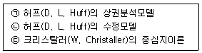
- ㉠
- ㉡
- ㉠, ㉢
- ㉡, ㉢
- ㉠, ㉡, ㉢
(정답률: 알수없음)
42. 고객유도시설은 고객을 모으는 자석과 같은 역할을 한다고 하여 소매자석(customer generator: CG)이라고도 한다. 도시형, 교외형, 인스토어형 등 입지유형에 따라 고객 유도시설이 달라지는데, 일반적인 인스토어형 고객유도 시설로 옳지 않은 것은?
- 대형 레저시설
- 에스컬레이터
- 계산대
- 주 출입구
- 주차장 출입구
(정답률: 알수없음)
43. 페터(R. M. Fetter)의 ‘공간균배의 원리’에 대한 설명으로 가장 옳지 않은 것은?
- 경쟁관계에 있는 점포들 사이의 상권배분을 설명하고 신규점포의 입지선정방안을 제시한다.
- 배후지 전체의 넓이 및 수요의 교통비 탄력성을 독립 변수로 사용하여 설명한다.
- 일반적으로 편의품점에게는 국부적 집중성 입지선정을 제안한다.
- 일반적으로 선매품점에게는 집재성 입지선정을 제안한다.
- 일반적으로 전문품점에게는 집심성 입지선정을 제안한다.
(정답률: 알수없음)
44. 매장의 규모를 결정할 때 적용할 원칙으로서 가장 옳지 않은 것은?
- 적정규모를 추정할 때 고객이 선호하는 규모를 고려한다.
- 비용을 상회하는 이익이 기대되는 경우에만 매장면적을 증대시킨다.
- 상권의 규모가 클수록, 향후 매출증가를 고려하여 여유매장을 미리 확보한다.
- 매장 크기와 점포 이미지는 정비례하므로, 운영자본이 허용하는 한 큰 매장을 확보한다.
- 매장규모와 관련된 비용은 고정비 성격이 강하므로, 손익분기점을 고려해 적정규모를 산정한다.
(정답률: 알수없음)
45. 다음의 소매점포의 입지 변화 가운데 성공할 확률이 가장 낮은 것은?
- 기생점포를 목적점포와 더 가까운 입지로 이전
- 흩어져 있던 공구상들이 하나의 단지에 공동 입주
- 선매품점포를 동종의 다른 브랜드 선매품점포로 전환
- 귀금속점포를 주차가 용이한 배후지 외곽의 입지로 이전
- 동일한 상권 안에서 목욕탕을 다른 목욕탕들과 더 떨어진 입지로 이전
(정답률: 알수없음)
46. 다음 중 크리스탈러(Christaller)의 중심지이론에서 전제하는 조건으로 옳지 않은 것은?
- 모든 방향에서 교통의 편리한 정도가 동일하다.
- 운송비는 거리에 비례하고 운송수단은 동일하다.
- 행정 및 서비스 기능을 수행하는 배후를 확보하기 위해, 중심지는 고지대 또는 저지대에 위치한다.
- 소비자들은 자신의 수요를 충족시키기 위해 가장 가까운 중심지를 찾는다.
- 소비자들은 평지에 고르게 분포되어 있다.
(정답률: 알수없음)
47. 빅데이터 분석을 통해 통찰력을 얻을 수 있는 질문으로 가장 옳지 않은 것은?
- 점포의 상품구색에 추가할 필요성이 높은 상품은 무엇일까?
- 향후에 단골이 될 가능성이 높은 고객들의 공통점은 무엇일까?
- 특정 유형의 소매점은 어떤 유형의 소매점포 옆에 입지하는 것이 좋을까?
- 소매점 마케팅전략에 반영할 고객들의 요구를 소셜미디어상의 의견에서 추론해볼까?
- 모든 데이터는 과거 분석에만 유효하므로, 미래 문제의 해답을 빅데이터에서 찾을 수 없다.
(정답률: 알수없음)
48. 아래 글상자와 같은 조건에서 소비자 K가 A지역에서 쇼핑할 확률을 수정된 허프(Huff) 모델을 이용하여 추정 한 값으로 옳은 것은? (단, 소비자 K의 점포크기에 대한 민감도 모수(parameter)는 1, 점포까지의 거리에 대한 민감도 모수(parameter)는 2로 하여 계산하시오)
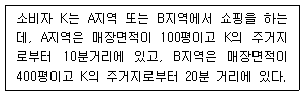
- 0.3
- 0.4
- 0.8
- 0.7
- 0.5
(정답률: 알수없음)
49. 다음 중 도매상권의 지리적 범위와 규모를 결정하는 직접적인 요인으로 가장 옳지 않은 것은?
- 경쟁기업의 입지, 분포, 집적도에 영향을 받는다.
- 고객인 소매업자의 입지, 판매액, 집적도 등에 영향을 받는다.
- 취급하는 상품의 종류나 특징의 영향을 받는다.
- 소비자의 인구 통계적 특성이나 라이프스타일의 변화 등에 영향을 받는다.
- 교통망과 교통체계의 정비 정도에 영향을 받는다.
(정답률: 알수없음)
50. 도매업의 경우에도 입지의 결정은 매우 중요하며, 생산구조와 소비구조의 특징에 따라 입지유형이 달라진다. 다음 중 다수 생산자에 의한 소량분산형 생산구조와 소수 소비자에 의한 대량집중형 소비구조를 가진 산업에 종사하는 도매상의 입지 특성으로서 가장 옳은 것은?
- 수집기능의 수행보다는 분산기능의 수행이 용이한 곳에 입지한다.
- 수집기능이나 분산기능보다는 중개기능의 수행이 용이한 곳에 입지한다.
- 분산기능의 수행보다는 수집기능과 중개기능이 용이한 곳에 입지한다.
- 수집기능과 분산기능이 모두 용이한 곳에 입지한다.
- 수집기능의 수행보다는 중개기능의 수행이 용이한 곳에 입지한다.
(정답률: 알수없음)
51. 상권분석과정에서 점포의 위치와 소비자의 분포를 분석하면 경우에 따라 거리감소효과를 관찰할 수 있다. 거리 감소효과(distance decay effect)와 관련한 내용으로 옳지 않은 것은?
- 거리조락현상 또는 거리체감효과라고도 한다.
- 거리 마찰에 따른 비용과 시간의 증가 때문에 발생한다.
- CST(customer spotting) map을 이용하면 쉽게 관찰 할 수 있다.
- 체크리스트법, 유사점포법, 회귀분석법을 이용하여 확인할 수 있다.
- 공간 상의 중심에서 멀어질수록 특정 경제 현상의 크기나 밀도가 감소하는 경향이다.
(정답률: 알수없음)
52. “유통산업발전법”(법률 제14997호, 2017. 10. 31., 일부 개정) 제8조에 따라 대규모점포 또는 전통상업보존구역에 준대규모점포의 개설등록을 하려는 자는 특별자치시 장‧시장‧군수 또는 구청장에게 소정의 서류를 첨부하여 소정의 양식에 따라 개설등록신청서를 제출해야 한다. 이 법이 정하는 개설등록신청서에 첨부해 제출해야 하는 서류로 옳지 않은 것은?
- 사업계획서
- 교통영향평가서
- 상권영향평가서
- 지역협력계획서
- 건축물의 건축 또는 용도변경 등에 관한 허가서 또는 신고필증 사본
(정답률: 알수없음)
53. 회귀모델을 이용하여 보다 정교하게 상권분석을 하려고 한다. 이 때 고려해야 할 사항으로 옳지 않은 것은?
- 신규점포를 분석하는 경우에는 해당 신규점포와 비슷 한 상권특성을 가진 표본 점포들에서 수집한 자료일 수록 유리하다.
- 풍부한 분석경험과 분석자료가 축적되어 있는 경우 이를 토대로 점포성과에 영향을 미치는 적절한 변수들을 선택할 가능성이 높아진다.
- 회귀모델의 장점은 점포내외의 물리적 입지조건, 점포이미지, 상권특성 등 다양한 변수들을 설명변수로 적용할 수 있다는 것이다.
- 회귀분석에 많은 설명변수를 투입하면 설명력과 예측력을 향상시킬 수 있으므로 설명변수를 최대한 많이 확보하고 모두 설명변수로 활용한다.
- 회귀모델에 투입되는 설명변수들은 상호연관성이 높은 경우가 많기 때문에 다중공선성의 문제를 해결해야한다.
(정답률: 알수없음)
54. 다음 중 소매점 집적지의 변화를 가져오는 요인으로 가장 옳지 않은 것은?
- 소매점의 대형화와 다점포화
- 소매점의 배송방법 변화
- 인구분포의 변화
- 제조업의 유통경로 변화
- 소비자의 기호와 구매행동 변화
(정답률: 알수없음)
55. 점포의 임대차계약을 진행하는 과정에서 다루게 되는 권리금에 대한 설명으로 옳지 않은 것은?
- 토지 또는 건물의 임대차와 관련해 발생하는 부동산이 갖는 특수한 장소적 이익의 대가를 의미한다.
- 점포의 영업시설, 비품, 거래처, 신용, 영업상의 노하우, 상가건물 위치에 따른 영업상의 이점 등을 양도 또는 이용하는 대가이다.
- 점포에 내재된 부가가치의 하나로 바닥권리금, 시설권리금, 영업권리금, 기타권리금 등으로 구분된다.
- 단골고객의 가치와 담배판권, 로또판권과 같은 인허가로 인하여 권리금이 형성되는 경우는 영업권리금에 해당된다.
- 권리금 계약이란 신규임차인이 되려는 자가 임차인에게 권리금을 지급하기로 하는 계약을 말한다.
(정답률: 알수없음)
56. 아래 글상자에 기술된 예측의 근거가 되는 이론으로 가장 옳은 것은?
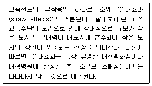
- 허프(D. L. Huff)의 상권분석모델
- 허프(D. L. Huff)의 수정된 상권분석모델
- 크리스탈러(W. Christaller)의 중심지이론
- 라일리(W. J. Reilly)의 소매인력법칙
- 컨버스(P. D. Converse)의 소매인력법칙
(정답률: 알수없음)
57. 상권분석시 관심을 가져야 할 공간적 불안정성(spatial non-stability)에 관한 설명으로 적절하지 않은 것은?
- 소비자의 동질성 때문에 공간상호작용모델의 모수들이 공간적으로 차이나는 것을 의미한다.
- 지역별 교통상황의 차이나 점포의 밀도가 원인이 될수 있으므로 세분시장별 모델추정방법은 지양해야한다.
- 고소득층 보다 상대적으로 자동차 소유비율 낮은 저소득층은 근거리에 위치한 점포를 애용할 가능성이 높은 것도 불안정의 일예이다.
- 지역의 중심에 위치한 거주자가 지역주변의 사람들 보다 거리증감에 따른 효용감소효과의 모수의 절대값이 작은 경우도 여기에 해당한다.
- 공간적 불안정성이 크면 통계적 적합도가 높은 경우에도 분석과정에서 오차가 발생할 수 있다.
(정답률: 알수없음)
58. 상권을 설정할 때는 공간의 균일성 정도를 고려해야 한다. 도시 내 공간의 균일성에 영향을 미치는 요인으로 가장 옳지 않은 것은?
- 기후
- 도로망
- 주택단지의 분포
- 소매점들의 차별화 정도
- 도시를 가로지르는 큰 하천
(정답률: 알수없음)
59. 상권의 유형중 역세권은 각종 교통수단의 연결점, 생활권의 중심, 지역성장의 거점 역할을 담당하기 때문에 점차 선호도가 높아지고 있는데 이에 대한 설명으로 적합하지 않은 것은?
- 역세권은 기차역이나 지하철역을 중심으로 다양한 상업 및 업무활동이 이뤄지는 주변지역으로 관련 법률에서는 역을 중심으로 반경 500m 이내로 규정하고 있다.
- 역세권의 범위는 역 주변의 교통사정, 도로사정 등에 따라서 변한다.
- 역세권은 역을 중심으로 반경 250m이내를 1차 역세권, 이를 둘러싼 반경 500m이내 지역을 2차 역세권으로 구분하는 방식으로 거리에 따라 계층을 나누기도 한다.
- 역세권은 핵심지구, 역세권 중심지구, 역세권지구, 역세권 배후지구로 구분할 수 있다.
- 역세권은 종착역세권, 환승역세권, 통과역세권으로 분류할 수 있는데 종착역세권은 대부분 도심부 역사를 중심으로 한 지역을 말한다.
(정답률: 알수없음)
60. 특정지역의 개략적인 수요를 측정하기 위해 사용되는 구매력지수(BPI)를 계산하는 과정에서 필요성이 가장 낮은 자료는?
- 전체 지역의 인구수(population)
- 해당 지역의 인구수(population)
- 해당 지역의 소매점면적(sales space)
- 해당 지역의 소매매출액(retail sales)
- 해당 지역의 가처분소득(effective buying income)
(정답률: 알수없음)
4과목: 유통마케팅
61. 발주량을 산출하기 위해 고려해야 할 요소에 해당하지 않는 것은?
- 발주 사이클
- 조달 기간
- 예상 판매량
- 점포 이미지
- 현재의 재고량
(정답률: 알수없음)
62. 가격결정과 관련된 설명 중 옳지 않은 것은?
- 준거가격은 소비자들이 특정한 상품을 구매할 때 기준으로 활용하는 가격을 의미한다.
- 묶음가격은 소비자들에게 두개 이상의 상품을 묶어서 판매하는 가격결정방식이다.
- 이중요율가격은 기본요금과 사용요금처럼 서로 다른 복수의 가격체계를 결합하는 가격결정방식이다.
- EDLP는 매장방문을 유도하기 위해 한정된 대표적 상품을 정상가격 이하로 판매하는 방식이다.
- 제품 가격의 끝자리를 홀수로 표시하여 제품이 저렴하다는 인식을 갖게 하는 방식은 단수가격전략이다.
(정답률: 알수없음)
63. 특정매입에 대한 설명으로 옳은 것은?
- 상품 인도시점부터 소매점이 소유권을 취득하고 재고 관리도 책임진다.
- 협력업체의 상품을 소매점 책임으로 판매하고, 협력업체는 판매액에 따라서 상품대금을 지급받는다.
- 상품은 소매점에서 관리하고, 위탁업체는 판매 분에 한해서 판매대금을 지급받는 위탁판매방식이다.
- 소매점에서 판매하고자 하는 완제품의 제조를 위탁받아 제조하는 경우이다.
- 소매점의 매입 관련 위험은 증가하지만, 차별화와 수익성을 높일 수 있는 매입방법이다.
(정답률: 알수없음)
64. 아래 글상자의 빈칸에 들어갈 용어로 옳은 것은?
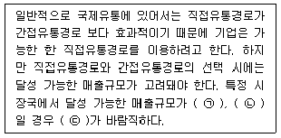
- ㉠ 적고, ㉡ 분산적, ㉢ 간접유통경로
- ㉠ 적고, ㉡ 집중적, ㉢ 간접유통경로
- ㉠ 적고, ㉡ 분산적, ㉢ 직접유통경로
- ㉠ 많고, ㉡ 분산적, ㉢ 직접유통경로
- ㉠ 많고, ㉡ 집중적, ㉢ 간접유통경로
(정답률: 알수없음)
65. 리스크 머천다이징에 대한 설명으로 옳지 않은 것은?
- 소매상이 스스로의 책임 하에 상품을 매입하고 판매까지 완결 짓는다.
- 유통업체가 판매 후 남은 상품을 제조업체에 반품하지 않는다.
- 제조업체와 체결한 특정 조건 하에서 상품 전체를 사들인다.
- 제조업체로부터 가격 상의 프리미엄을 제공받을 수있다.
- 상품이 최종 고객에게 인도됨과 동시에, 소유권이 제조업체에서 소매상에게 넘어 간다.
(정답률: 알수없음)
66. 아래 글상자는 고객충성도를 높이기 위한 로열티 프로그램(loyalty program)의 사례이다. 해당 사례와 관련성이 가장 높은 로열티 프로그램은?
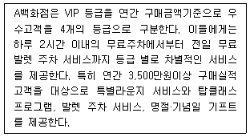
- 어피니티 프로그램(affinity program)
- 커뮤니티 프로그램(community program)
- 지식기반 프로그램(konwlege building program)
- 스페셜 트리트먼트(special treatment)
- 교차판매 프로그램(cross selling program)
(정답률: 알수없음)
67. 아래 글상자 속의 A신발회사가 유통경로로 선택할 가능성이 가장 높은 소매업태로 옳은 것은?
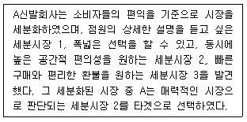
- 백화점
- 전문점
- 방문판매
- 온라인 소매점
- 대형할인점
(정답률: 알수없음)
68. 아래 글상자가 설명하고 있는 동선(traffic line)으로 옳은 것은?
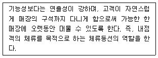
- 주동선
- 부동선
- 판매원동선
- 관리동선
- 보조동선
(정답률: 알수없음)
69. 소비자의 점포선택행동에 영향을 미치는 변수들 중 소비자 속성요인으로 옳지 않은 것은?
- 소매점이 입지한 지역의 인구
- 가족생활주기 및 가족 규모
- 사회계층과 라이프스타일
- 소매점과 자아이미지의 일치성
- 점포충성도
(정답률: 알수없음)
70. 아래 글상자는 온라인 마케팅을 위한 웹사이트 설계요소들에 대한 설명이다. 각각의 빈칸에 들어갈 설계 요소들이 옳게 나열된 것은?
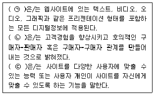
- ㉠ 구성(context), ㉡ 커뮤니티(community), ㉢ 상업화(commerce)
- ㉠ 구성(context), ㉡ 커뮤니케이션(communication), ㉢ 고객화(customization)
- ㉠ 콘텐츠(content), ㉡ 커뮤니티(community), ㉢ 고객화(customization)
- ㉠ 구성(context), ㉡ 연결성(connection), ㉢ 고객화(customization)
- ㉠ 콘텐츠(content), ㉡ 커뮤니티(community), ㉢ 상업화(commerce)
(정답률: 알수없음)
71. 소매 서비스의 품질을 개선하기 위한 갭분석 모형에서 설명하는 서비스 격차(gap)의 종류와 그 내용으로 옳지 않은 것은?
- 시장정보(경청) 갭 : 고객이 기대하는 바와 기업이 고객의 기대를 바라보는 인식의 차이에서 발생
- 서비스 기준(설계) 갭 : 기업이 고객의 기대를 만족시키기 위한 서비스 기준 및 시행지침을 잘못 설정하여 발생
- 서비스 성과 갭 : 종업원들이 적절한 매뉴얼과 지침에 따라 제대로 서비스를 이행하지 못하여 발생
- 커뮤니케이션 갭 : 고객에게 전달된 서비스가 그 서비스에 대한 외부 커뮤니케이션과 차이가 날 때 발생
- 고객서비스회복 갭 : 고객의 불만 원인에 대한 이해와 그 처리가 고객이 기대하는 바와 달라서 발생
(정답률: 알수없음)
72. 상품믹스에 대한 설명으로 옳지 않은 것은?
- 상품품목(item)은 가격, 사이즈, 기타 속성에 따라 확실하게 구분되는 단위상품이다.
- 상품계열(line)은 소매점에서 취급하는 상품군의 다양성을 의미한다.
- 상품믹스 폭(width)은 소매점에서 취급하는 상품계열의 다양성을 의미한다.
- 상품믹스 깊이(depth)는 소매점의 동일 상품계열 내이용 가능한 대체품목의 숫자를 의미한다.
- 재고유지단위(SKU)는 유통업체에서 판매되는 상품계열과 아이템 등 모든 상품의 집합을 의미한다.
(정답률: 알수없음)
73. 아래 글상자에서 설명하는 무점포 소매상의 유형으로 옳은 것은?
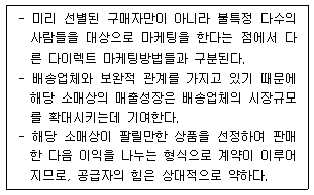
- 자동판매기
- 방문판매
- 전자상거래
- TV홈쇼핑
- 카탈로그 판매
(정답률: 알수없음)
74. 아래 글상자의 빈칸에 들어갈 용어로 옳은 것은?
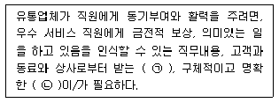
- ㉠ 피드백과 인정, ㉡ 체벌
- ㉠ 행동관찰, ㉡ 인터뷰
- ㉠ 피드백과 인정, ㉡ 목표
- ㉠ 교육훈련, ㉡ 목표
- ㉠ 직무관여, ㉡ 리더십
(정답률: 알수없음)
75. 아래 글상자는 서비스의 어떤 특성 때문에 발생하는 문제를 해결하려는 마케팅 방안들을 기술하고 있다. 관련된 서비스의 특성으로 가장 옳은 것은?
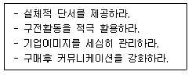
- 소멸성
- 이질성
- 무형성
- 비분리성
- 개별성
(정답률: 알수없음)
76. 레이아웃 설계의 순서로 옳은 것은?
- 부문 레이아웃 – 매장 레이아웃 – 점포 레이아웃 – 페이스 레이아웃 – 곤돌라 레이아웃
- 매장 레이아웃 – 페이스 레이아웃 – 곤돌라 레이아웃 – 부문 레이아웃 – 점포 레이아웃
- 곤돌라 레이아웃 – 부문 레이아웃 – 매장 레이아웃 – 점포 레이아웃 – 페이스 레이아웃
- 점포 레이아웃 – 매장 레이아웃 – 부문 레이아웃 – 곤돌라 레이아웃 – 페이스 레이아웃
- 페이스 레이아웃 – 곤돌라 레이아웃 – 매장 레이아웃 – 부문 레이아웃 – 점포 레이아웃
(정답률: 알수없음)
77. 소매업의 서비스 전략에 대한 설명으로 가장 옳은 것은?
- 지속적이고 일관된 서비스의 제공을 위해 맞춤화와 표준화가 중요하다.
- 보증 서비스의 경우 고객이 구매하려는 상품의 가치와는 관계가 없다.
- 전문적인 서비스의 제공을 위해 매장 내의 대고객 서비스는 소매점이 담당하고, 반품이나 A/S는 제조업체가 제공한다.
- 고객은 제공받은 서비스에 대한 지각과 기대와의 비교를 통해 서비스를 평가한다.
- 서비스품질은 제품품질과는 달리 마케팅믹스중의 유통변수에 해당한다.
(정답률: 알수없음)
78. 재고관리에 대한 설명으로 옳지 않은 것은?
- 재고가 지나치게 많은 경우에는 투매손실이 발생할 수 있다.
- 재고가 부족하면 매출을 올릴 수 있는 기회를 잃어버리는 기회손실이 발생한다.
- 표준재고는 연간 목표 매출액을 전년도의 상품회전율로 나누어 계산한다.
- 팔릴 가능성은 매우 낮지만 취급할 수밖에 없는 상품의 주문에는 정량발주법을 활용한다.
- 취급하고 있는 상품의 종류가 많은 경우에는 정기 발주법을 활용하여 주문한다.
(정답률: 알수없음)
79. 통합커뮤니케이션에 대한 설명으로 옳지 않은 것은?
- 다양한 커뮤니케이션 믹스들을 통합하여 커뮤니케이션 효과를 극대화하기 위해 수행한다.
- 전체 시장을 통합할 수 있는 커뮤니케이션을 통해 유통업자의 시장지배력을 강화하기 위해 수행한다.
- 목표고객의 행동에 영향을 주거나 직접적인 행동을 유발하기 위해 수행한다.
- 소비자 행동에 관한 정보와 데이터를 활용하여 커뮤니케이션 수단들을 통합한다.
- 상호 가치가 있는 정보교환을 통해 판매자와 소비자 간의 우호적인 관계를 형성시킨다.
(정답률: 알수없음)
80. 아래 글상자가 설명하는 직원 교육훈련방법으로 옳은 것은?
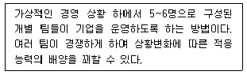
- 대역법(under studies)
- 코칭법(coaching)
- 역할연기법(role playing)
- 중요사건법(critical incidence method)
- 비즈니스게임(business game)
(정답률: 알수없음)
5과목: 유통정보
81. 아래 글상자에서 제시하고 있는 단어와 관련 깊은 정보 기술로 옳은 것은?
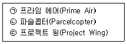
- 자율주행자동차
- 드론
- 로봇
- 플라이윙
- 집라인
(정답률: 알수없음)
82. 유통업체에서 도입하고 있는 클라우드 컴퓨팅에 대한 설명으로 옳지 않은 것은?
- 유통업체들은 정보시스템 구현에 있어 기존 정보시스템 운영 환경을 보다 운영 효율성이 높은 클라우드 컴퓨팅 환경으로 바꾸고 있다.
- 클라우드 컴퓨팅은 온 프레미스 시스템(on Premise System)으로 전문화된 IT 벤더에 의해 서비스를 지원받는다.
- 클라우드 컴퓨팅은 대표적으로 SaaS(software as a service), IaaS(infrastructure as a service), PaaS(platform as a service)로 구분할 수 있다.
- 대표적인 클라우드 서비스를 제공하는 공급업체로는 아마존(Amozon)과 마이크로소프트(Microsoft)가 있다. 아마존은 클라우드서비스로 AWS(Amazon Web Service)를 제공하고 있고, 마이크로 소프트사는 애저 (Azure)를 제공하고 있다.
- 클라우드 컴퓨팅을 도입하면, 유통업체는 유통정보 시스템의 유지, 보수, 관리 비용을 줄일 수 있다.
(정답률: 알수없음)
83. 유통업체에서 이용하는 상용 ERP(enterprise resource planning) 시스템에 대한 설명으로 옳지 않은 것은?
- 다양한 모듈로 구성되어 있어, 유통업체마다 필요한 모듈만 선별해 도입할 수 있다.
- SCM(supply chain management) 시스템과 CRM (customer relationship management) 시스템과 연동 되도록 구축할 수 있으며, 이를 확장형 ERP 시스템이라 한다.
- ERP 구축시, 업무프로세스 혁신과 함께 커스터마이제이션과 컨피규레이션을 수행한다. 안정적인 시스템 도입을 선호하는 유통업체의 경우 커스터마이제이션을 선호한다.
- 유통업체는 ERP 시스템 기능을 강화하기 위해 RFID 시스템과 ERP 시스템을 연동하도록 구축하는데, 이러한 과정을 볼트 온(bolt-on)이라고 한다.
- 유통업체에서는 ERP 시스템을 통해 물류유통 프로세스에서 발생하는 자료를 통합된 데이터베이스에서 처리함으로써 정보시스템의 전사적 최적화를 추구할 수 있다.
(정답률: 알수없음)
84. 공급사슬관리에서 나타나는 문제로 정보왜곡 현상을 가리키는 용어에 대한 설명으로 옳지 않은 것은?
- 정보왜곡 문제를 채찍효과라고도 한다.
- 공급사슬 상의 상류에서 하류로 발주정보가 전달되는 과정에서 정보의 왜곡현상은 하류로 내려갈수록 그 폭이 커진다.
- 제조업자, 유통업자, 고객 사이에서 제품의 거래와 관련된 정보의 불일치에 기인한 문제로 볼 수 있다.
- 정보기술을 활용하여 전달속도를 향상시키고 투명성을 보장해 주는 e-SCM 구축으로 현상을 축소시킬 수 있다.
- 대표적 사례로 P&G의 유아용 기저귀 제품인 팸퍼스의 수요 예측 문제나 HP의 데스크톱 컴퓨터 생산 예측 문제 등이 있다.
(정답률: 알수없음)
85. POS데이터의 활용을 아래 글상자의 내용과 같이 단계별로 나누어 볼 때, ㉡단계에 속하는 활동과 관련된 내용으로 가장 옳지 않은 것은?
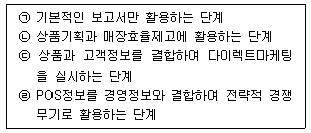
- ABC분석 정보
- 판촉분석 정보
- 자동발주 정보
- 재고회전율 정보
- 선반진열효율 정보
(정답률: 알수없음)
86. 이미징 기반 판독기로만 판독 가능한 바코드로 가장 옳은 것은?
- ITF-14
- EAN/UPC
- GS1 DataBar
- GS1 DataMatrix
- GS1-128 심볼로지
(정답률: 알수없음)
87. GTIN(Global Trade Item Number)을 변경하지 않아도 되는 상황의 예로 가장 옳은 것은?
- 냉동 연어가 이제는 생연어로 판매되는 경우
- 전에도 있었지만 표시는 되지 않았던 기능이 표시돼 판매되는 경우
- 제형 변경으로 기존 거래단품의 설탕을 50% 줄여 “저당”제품을 만든 경우
- 견과 제품에 법정 알레르기 물질이 새로 첨가돼 소비자의 구별이 필요한 경우
- 제형에 잠재적 위험 물질이 추가돼 거래업체가 제품을 현재 사용하거나 보관하는 방법이 달라질 수도 있는 경우
(정답률: 알수없음)
88. 데이터 분석 알고리즘인 사례기반추론 알고리즘의 특징에 대한 설명으로 가장 옳지 않은 것은?
- 모델의 구조가 간단하고 이해가 용이하다.
- 사례를 저장하기 위한 공간이 불필요하다.
- 복잡한 문제를 비교적 단순한 체계로 모델링을 하여 복잡한 의사결정 문제를 간결하게 해결하는데 도움을 제공한다.
- 사례를 설명하고 있는 속성이 적절하지 못한 경우 결과 값이 나빠진다.
- 인간의 두뇌에서 문제를 해결하는 방식과 유사하기 때문에 그 결과를 이해하기 쉽다.
(정답률: 알수없음)
89. 인터넷이 제공하는 서비스에 관한 설명으로 가장 옳지 않은 것은?
- FTP(File Transfer Protocol) - 인터넷상의 컴퓨터들 간에 파일을 교환하기 위한 표준 프로토콜이다.
- 고퍼(Gopher) - 자신이 필요로 하는 컴퓨터 파일이나 문서가, 어느 anonymous FTP 서버에서 제공되는지를 찾아주는 프로그램이다.
- 텔넷(Telnet) - 자신이 사용권한을 가지고 있다는 전제하에 다른 사람의 호스트 컴퓨터를 원격지에서 접근할 수 있도록 해주는 방법이다.
- IRC(Internet Relay Chat) - 인터넷 실시간 대화를 의미하며, 가까운 서버들끼리 직‧간접으로 연결되어 있어 IRC 서버 가운데 어느 한 서버에 연결하기만 하면 자동적으로 전 세계 서버와 연결된다는 특징을 지닌다.
- WAIS(Wide Area Information Service) - 인터넷에서 정보를 효율적으로 찾을 수 있도록 도와주는 서비스로 사용자가 찾고자 하는 문서를 정확히 모를 때나, 사용자가 입력한 키워드가 포함되어 있는 문서를 찾고 싶을 때 주로 이용된다.
(정답률: 알수없음)
90. 정보를 지식으로 전환하는 데 필요한 네 가지 유형의 중요한 활동으로 가장 옳지 않은 것은?
- 통계적 분석
- 타 정보와의 비교
- 함축된 정보 발견
- 타인과의 상호작용
- 다른 지식과의 연관
(정답률: 알수없음)
91. 의사결정지원시스템의 정의와 필요성에 대한 설명으로 가장 옳지 않은 것은?
- 의사결정지원시스템은 구조화 또는 반구조화된 의사 결정을 지원하는 컴퓨터 기반의 시스템이다.
- 복잡하고 방대한 경영문제를 해결하는 데 인간의 정보 처리능력의 한계로 의사결정 지원시스템의 도움이 필수적이라고 할 수 있다.
- 기술 혁신 및 글로벌 시장의 등장 등으로 고려해야 하는 대안의 수가 증가하고 있어 의사결정지원시스템의 필요성이 대두되고 있다.
- 경영환경의 복잡성과 불확실성 증대로 인해 계량적인 분석의 필요성이 높아져 의사결정지원시스템의 도움이 필수적이라고 할 수 있다.
- 분석모형과 데이터를 제공함으로써 상호대화적 방식을 통해 의사결정자가 보다 효과적으로 의사결정문제를 해결할 수 있도록 지원해 주는 컴퓨터 기반의 시스템이다.
(정답률: 알수없음)
92. 유통정보시스템 구축과 관련된 내용으로 가장 옳지 않은 것은?
- 유통정보시스템 구축은 생산과 물류효율화를 위해 필수적인 요소이다.
- 유통정보시스템 구축은 경로구성원간의 원활한 커뮤니케이션 촉진을 위해 필요하다.
- 유통정보시스템 구축을 위해서는 POS, EDI, VAN, IoT, Bigdata 등 다양한 정보기술들이 활용될 수 있다.
- 유통정보시스템 구축은 유통산업의 대형화, 다점포화 등으로 확대된 시장을 효율적으로 관리하기 위해 필요하다.
- 유통정보시스템은 경영정보시스템과 마케팅정보시스템등과 같은 조직내 다른 시스템과 정보 연계 없이 독립적으로 구축되어야 한다.
(정답률: 알수없음)
93. 다음 내용을 포괄하는 가장 적절한 용어는?
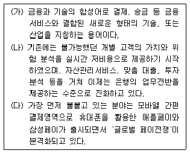
- 온덱
- EBPP
- 아마존 웰렛
- 스마트 카드
- 핀테크
(정답률: 알수없음)
94. A기업에서는 운송자들에게 실시간 교통정보에 기반한 경로 시뮬레이션를 실시함에 따라 최적의 운송경로를 선택할 수 있도록 유통경로관리시스템을 구축하고자 한다. 이를 구현하기 위해 관련된 정보기술들과 그 설명이 옳지 않은 것은?
- LBS - 무선 인터넷을 기반으로 하여 사용자의 위치를 제공
- GIS - 2D, 3D 등 다차원의 지도정보를 지원
- GPS - 위성과 통신하여 현재 정확한 시간과 위치를 확인하도록 지원
- RFID- 차량내 부착되어 차량의 출입 여부를 자동으로 인식하도록 지원
- MAN - 한 사람이 사용하는 두 대 이상의 장비간 통신하는 기능 지원
(정답률: 20%)
95. 검색엔진의 종류를 데이터를 수집하고 표현하는 방식에 따라 구분할 경우 다음 글상자가 뜻하는 유형으로 가장 옳은 것은?
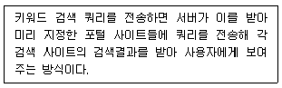
- 메타 검색엔진
- 인덱스 검색엔진
- 주제별 검색엔진
- 디렉토리 검색엔진
- 시멘틱 웹 검색엔진
(정답률: 알수없음)
96. 마크업언어(MarkUp Language)에 대한 설명으로 옳지 않은 것은?
- HTML, SGML, XML 등이 대표적인 마크업언어 이다.
- HTML은 간단한 사용방법으로 많은 사용자들이 선호하지만 정의된 Tag외에 사용하지 못하는 한계를 가지고 있다.
- XML은 문서의 내용과 관련된 태그를 사용자가 직접 정의할 수 있다.
- XHTML은 다양한 웹브라우저에서 동일하게 보일 수 있는 웹페이지를 생성하도록 웹표준을 지원하는 마크업 언어이다.
- SGML은 다른 마크업 언어 중 제일 쉬운 언어로 사용자 층이 매우 많다.
(정답률: 알수없음)
97. 아래 글 상자의 내용을 읽고 해당되는 적절한 용어로 옳은 것은?
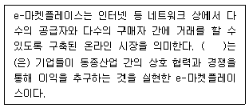
- 수직적 e-마켓플레이스
- 수평적 e-마켓플레이스
- 코피티션
- 교차적 e-마켓플레이스
- 카르텔
(정답률: 알수없음)
98. 빅데이터의 기술 요건을 수집-공유-저장-분석-시각화 단계로 나누어 볼 때 각 단계별로 필요한 기술요건을 짝지어 놓은 것으로 옳지 않은 것은?
- 빅데이터 수집 - 크롤링 엔진
- 빅데이터 공유 –데이터 동기화
- 빅데이터 저장 - RSS, Open API
- 빅데이터 분석 - 텍스트 마이닝
- 빅데이터 시각화 - 대시보드, 구글 챠트
(정답률: 알수없음)
99. 아래 글상자의 내용과 관련된 데이터마이닝 기법으로 가장 옳은 것은?
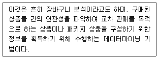
- 분류 규칙
- 순차 패턴
- 연관 규칙
- 군집화 규칙
- 신경망 모형
(정답률: 알수없음)
100. 다음 중 기업에서 정보시스템의 역할 변화를 가장 올바르게 순차적으로 나열한 것은?
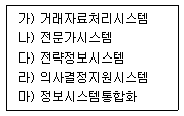
- 가) → 나) → 다) → 라) → 마)
- 가) → 다) → 나) → 라) → 마)
- 가) → 나) → 다) → 마) → 라)
- 가) → 다) → 나) → 마) → 라)
- 가) → 라) → 나) → 다) → 마)
(정답률: 알수없음)